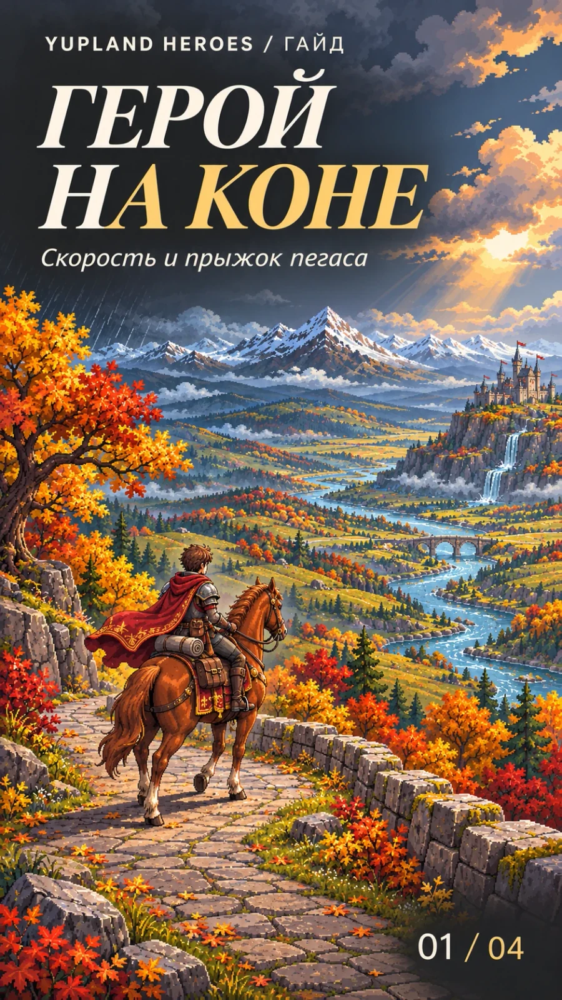
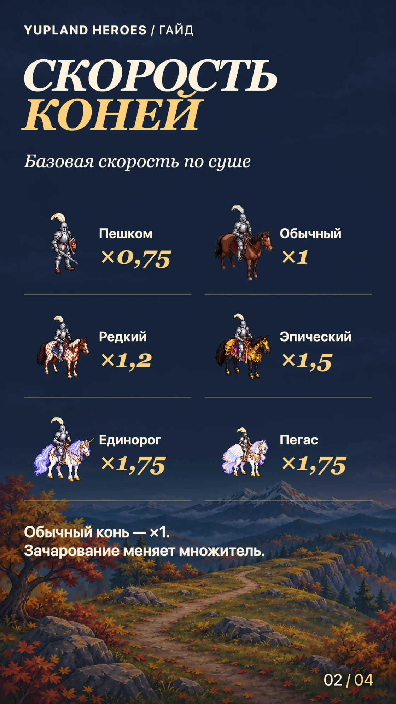
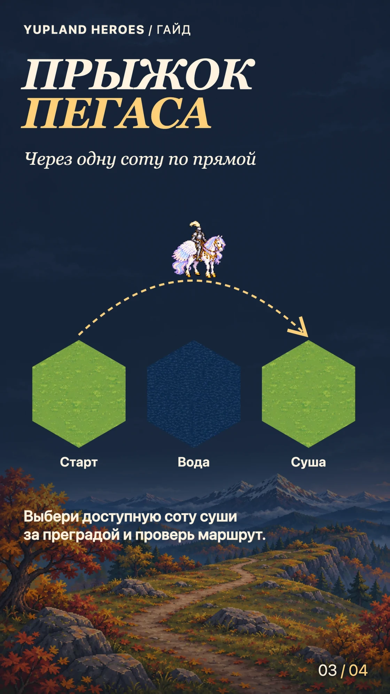
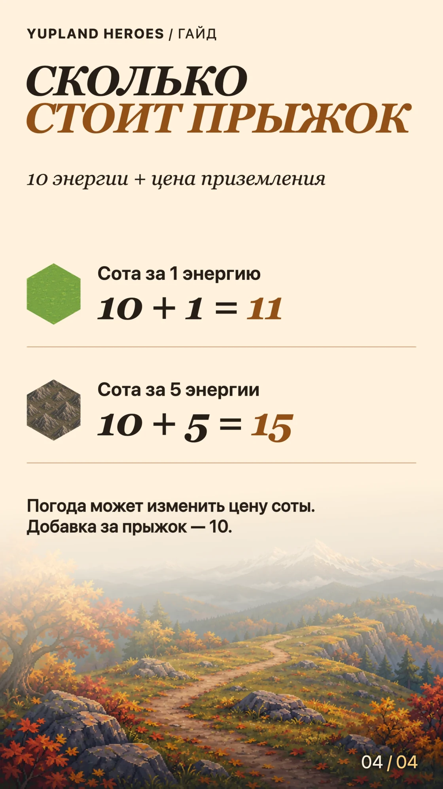

Герой на коне
-
Обложка 
-
Шаг 01 
-
Шаг 02 
-
Шаг 03 
Верхом герой быстрее перемещается по суше. Пегас также может перепрыгнуть одну соту, если за ней есть доступная клетка суши.
Сравни скорость коней
За ×1 принята скорость обычного коня. Пешком скорость ×0,75. Редкий конь даёт ×1,2, эпический — ×1,5, единорог и пегас — ×1,75. Это скорость движения по карте без зачарования.
Свой множитель можно посмотреть в карточке коня в экипировке героя. Зачарование учитывается в карточке. Например, эпический конь с зачарованием +20% даёт скорость ×1,8.
Выбери соту для прыжка
С пегасом выбери доступную соту суши в двух клетках по прямой. Между стартом и целью может быть вода или другая преграда. Пегас перепрыгивает одну клетку за раз и приземляется на сушу. С корабля такой прыжок недоступен.
Прыжок входит в обычный расчёт маршрута. Если есть более экономный путь, игра может предложить обход.
Посчитай энергию
За прыжок игра прибавляет 10 энергии к обычной цене входа в соту приземления. Если вход на неё стоит 1, прыжок обойдётся в 11. Если вход стоит 5, получится 15. Погода и свойства героя могут изменить цену входа. Добавка за прыжок составляет 10.
Стоимость обычного шага разобрана в гайде «Зачем обход?».